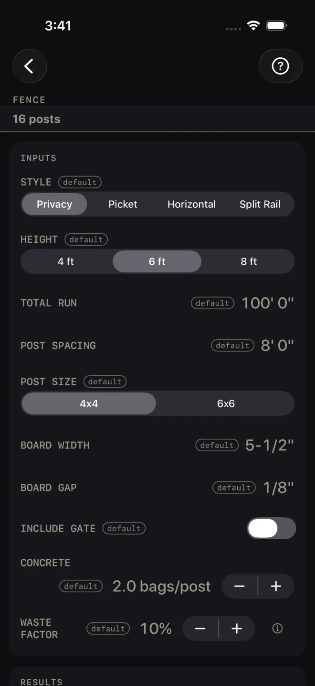

Fence
What it's for
Takes off a fence run: privacy, picket, horizontal or split rail. You get posts, boards, rail footage and concrete bags to buy, an elevation drawing with a post footing detail, and a running mark-out of the post positions to pull off one tape. It is an order takeoff and a layout. It makes no code check.
Step by step
The example is the screen as it opens: a 6 ft privacy fence, 100' 0" long, posts at 8' 0", 4x4 posts, 5-1/2" boards with a 1/8" gap, no gate, 2.0 bags of concrete per post, 10% waste.

1 3 5 6 7- Pick STYLE: Privacy, Picket, Horizontal or Split Rail. Changing the style resets the board width and gap to that style's starting sizes. Split Rail has no boards, so the two board rows are hidden.
- Pick HEIGHT: 4 ft, 6 ft or 8 ft. It sets the post and picket lengths in the material list and the number of rails.
- Enter TOTAL RUN, the whole fence line from the center of the first post to the center of the last, gates included. Then POST SPACING, center to center.
- Pick POST SIZE, 4x4 or 6x6. It names the post row in the material list and sets the post faces in the mark-out and the drawing.
- Enter BOARD WIDTH as the actual width of the board, not the nominal size, and BOARD GAP, the space between boards.
- Turn on INCLUDE GATE for a gate. A GATE WIDTH row appears. The gate width comes out of the run before boards and rails are counted, and the gate adds one post.
- Set CONCRETE in bags per post, in half-bag steps. At 0.0 — posts set dry in gravel, or driven — no concrete is bought and the concrete row leaves the list.
- Set WASTE FACTOR. It is added to the posts, boards, rails and concrete.
Reading the results
![Fence scrolled to the results. The last inputs show above — CONCRETE 2.0 bags/post, its label on a line of its own over the value and stepper, then WASTE FACTOR 10% with its label beside them on two lines. RESULTS reads 16 posts, 235 boards · 330 lin ft rails, Spacing 8' 0" · Height 6' 0", 31 bags concrete, then BASIS & WHAT WAS ASSUMED. The elevation shows a 100' 0" run 6' 0" high with 8' 0" bays, a footing detail marked 2' 0" and VERIFY FROST, the note 235 BOARDS (SCHEMATIC SPACING) and the title strip FENCE ELEVATION — 16 POSTS @ 4x4 — NOT TO SCALE.](../shots/fence--results.webp) 9
12
10
9
12
10
- The headline is posts to buy, waste included. On the defaults it reads 16 posts. The count is the run divided by the spacing, rounded up, plus the end post, plus one for a gate, then the waste. It is more than the number you will set. The mark-out below shows the posts you set.
- Boards and rails. On the defaults: 235 boards · 330 lin ft rails. Boards are the run, less the gate, divided by board width plus gap. Rails are lineal feet for the whole run: two rails for a 4 ft fence, three for 6 ft, four for 8 ft, and three for split rail. The next line repeats your spacing and height.
- Concrete is bags for every post set, at your bags per post, plus waste, rounded up to whole bags — half a bag per post on 14 posts is 8 bags, not 14. On the defaults: 31 bags concrete. At 0.0 bags per post it reads 0 and there is no concrete row.
- The drawing is an elevation of the run with the first bay and the full length dimensioned, and a footing detail in the corner. The detail shows the burial the post length is figured on, 2' 0", marked VERIFY FROST, with a concrete collar only when CONCRETE is above 0.0 — a post set dry is drawn in earth. The board note says SCHEMATIC SPACING: the count is real, the boards drawn are not one for one. Pinch to zoom, drag to pan, double-tap to reset, and use the expand button for full screen. See Drawings.
- RUNNING MARK-OUT lists every post between the two ends as a pair of tape readings, the near face and the far face, pulled from the center of the first post. The faces follow POST SIZE: 3-1/2" apart for a 4x4, 5-1/2" for a 6x6. On the defaults there are 12 marks, P1 at 7' 10-1/4" → 8' 1-3/4". Tap ✓ MARKED — NEXT as you go, or the speaker to have them read out. RESET takes you back to the first mark; it asks before it does, and it stops the speaker. The note under the list says it: hook the first post center, and gates lay out on site. See Mark-out and speak.
- MATERIALS. Each row carries what it was figured on. On the defaults: 4x4 posts — 8' each (2' burial — verify frost depth), Fence boards — 6' pickets, Rails — 16' stock typ, Concrete mix (60-lb). An 8 ft fence adds a note on the concrete row to deepen the burial. BASIS & WHAT WAS ASSUMED states the post, rail and burial rules; these notes and the footing detail carry the rest.
- The buttons. CUT SHEET shares a PDF of the drawing, inputs and materials, and the list icon at the right end of the same button shares the material list alone. SAVE keeps the result in History. CUT LIST puts the material list on the Lock Screen as a cut list to work through. SEND LIST shares the list as a page someone else can open and tick off on their own phone, with no app.
![Fence scrolled to the end: mark-out rows P3 to P12, the note Hook the first post CENTER — interior post faces at 8' oc. Gates lay out on site, the ✓ MARKED — NEXT and RESET buttons, MATERIALS listing 4x4 posts — 8' each (2' burial — verify frost depth) 16 pcs, Fence boards — 6' pickets 235 pcs, Rails — 16' stock typ 330 lin ft, Concrete mix (60-lb) 31 bags, then CUT SHEET — one pill with a list icon behind a hairline at its right end — beside SAVE, over CUT LIST and SEND LIST and the line Enter your own measurements to export, start a cut list or send one.](../shots/fence--end.webp) 13
14
15
13
14
15
There are no red flags on this screen. Nothing here is a pass or a fail.
Fence is a Pro calculator. CUT SHEET, SAVE,
CUT LIST, SEND LIST and the mark-out speaker are Pro as well, a one-time
purchase. CUT SHEET, the list icon at its right end, CUT LIST and SEND LIST
stay dim until you have entered your own measurements. SAVE stays lit, but until then a tap only answers Enter your job's numbers first
and saves nothing.
Common mistakes
- Digging a hole for every post in the headline. The headline is the order, with waste. Set the posts the mark-out lists, plus the two ends and any gate post.
- Entering the nominal board size as BOARD WIDTH. The board count divides the run by the width you type plus the gap. A 1x6 is 5-1/2", which is what the row opens at.
- Setting your board sizes and then changing STYLE. The style change puts the width and gap back to its own starting values. Pick the style first.
- Trusting the 2' burial in frost country. The post length in the material list is fence height plus that burial. The screen tells you to verify frost depth. Buy longer posts if yours is deeper.
- Changing POST SIZE after marking. The mark-out faces follow the post picked — 3-1/2" apart for a 4x4, 5-1/2" for a 6x6 — so re-read the list if you switch.
Related
- Deck
- Baluster Spacing — even picket or baluster layout in one bay
- Concrete — post holes by volume, as a column pour
- Mark-out and speak
- Cut sheets and templates
- Cut list, Lock Screen and widgets
- Saving and history
- Drawings